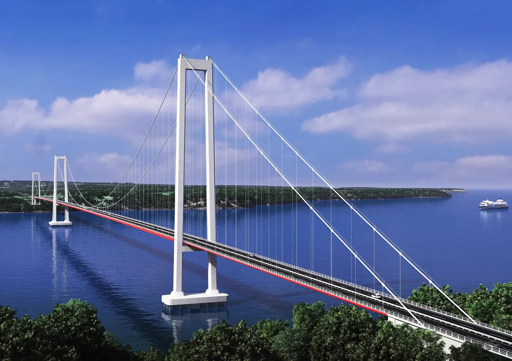

🌉 基础设施
奇洛埃将不再是岛屿：连接智利南端的超级大桥
经过半个多世纪的延期梦想，查考桥正朝着2028年落成典礼迈进。这座全长2.75公里、净空高度54.9米的大桥，将把50分钟的轮渡之旅缩短为短短三分钟的过桥时间——终结智利最南端群岛数个世纪以来的地理隔离。

一项重新定义巴塔哥尼亚地图的工程
查考桥是智利历史上最雄心勃勃的公路工程。其2.75公里的长度分为两个主跨：奇洛埃一侧1155米，大陆一侧1055米，桥面中央净跨300米。54.9米的净空高度（相对于平均潮位）将确保大型船只不受限制地通过查考海峡——智利极南端最繁忙的海上航线之一。 据智利公共工程部消息，截至2026年2月，该工程已完成63%，预计于2028年10月竣工。竣工后，5号公路将从阿里卡到克洛纳（Quellón）贯通，使群岛与全国其他地区彻底相连。项目总造价约为11亿美元。从渡轮50分钟到大桥3分钟
对岛民来说，最直接、最实质的变化是告别渡轮——这一与大陆相连的唯一纽带。如今，穿越查考海峡需要约50分钟的船程，加上旺季（南半球夏季和寒假）高达两到三小时的候船时间，且受天气、潮汐和渡轮运力的制约。大桥建成后，这段旅程将缩短至仅需三分钟，全年365天、每天24小时畅行无阻。 对奇洛埃的家庭而言，陆上永久连接意味着：不必再看潮汐脸色就能把病人送往大陆医院，不必再围绕船班时刻表规划求学之路，即便在巴塔哥尼亚风暴中也能收到基本物资。这座桥不只是基础设施：它是留在故土也能过上更好生活的可能性。同样改变阿根廷巴塔哥尼亚的走廊
查考桥的影响不止于智利海岸。对阿根廷巴塔哥尼亚来说，这项工程在南部跨洋走廊上开辟了全新维度：5号智利公路将首次通过陆路延伸至大岛（Isla Grande）最南端的克洛纳，形成一条贯通大西洋与太平洋、不间断的公路轴线。这意味着更直接的商业路线、双边旅游更大的流通空间，以及巴塔哥尼亚边境口岸价值的重新提升。 对内乌肯省、里奥内格罗省和丘布特省而言，这座桥将强化两国政府数十年来一直推动的区域一体化进程。阿根廷巴塔哥尼亚的特色产品——羊毛、水果、木材、油气资源——将拥有通往太平洋港口更顺畅的走廊。从地缘政治角度看，极南地区将从边缘地带蜕变为大陆战略连通的核心节点。奇洛埃等待的经济腾飞
经济上，陆上连接将推动旅游业——岛屿的主要引擎之一。预计游客数量将翻倍，带动酒店、餐厅和服务业蓬勃发展。当地产品——鱼类、贝类、乳制品和手工艺品——将能更快、以更低成本进入北部市场。当地商界人士将其潜在影响与莫科普利（Mocopulli）机场的建设效应相提并论，但规模要大得无法比拟。呼吁守护"内陆岛"的声音
并非所有人都以同等热情庆祝这一连接。在奇洛埃，一种安静却持续的抵制声音与欣喜并存，围绕着官方乐观主义并不总能回答的问题：什么样的奇洛埃会出现在桥的另一端？海洋动物面临压力。 查考海峡是南太平洋蓝鲸最重要的觅食走廊之一。智利南方大学的环保组织和科学家警告称，永久性交通产生的振动以及桥墩对海底洋流的改变，可能影响生活在该海峡的鲸目动物、海豚和海狮的迁徙规律。环境评估局要求制定监测计划，但生态学家认为这些计划远远不够。
惠利切社区：领土与认同。 奇洛埃原住民指出，大桥线路及接入工程途经对其社区具有文化和精神意义的区域。奇洛埃酋长委员会等组织要求开展更广泛的原住民协商，认为国家在形式上履行了程序，但未能体现国际劳工组织第169号公约的精神。他们对手工渔业和祖先领地所受影响的关切始终未能得到充分解决。
对"大陆化"的恐惧。 智利作家、艺术家和活动人士担忧一些人所说的岛屿"大陆化"：连锁商业机构大批涌入、地价上涨将老居民逐出、本土文化——特劳科和平科亚的神话传说、木瓦建筑、库兰托美食——在大众旅游压力下逐渐消融。"我们不想变成另一个蒙特港"这句话道出了这种恐惧的本质。房地产投机已显而易见：自项目确认以来，安库德和卡斯特罗的地价显著上涨。
渡轮工人。 轮渡公司直接雇用帕尔瓜和查考数百个家庭。大桥投入运营后，渡轮将失去大部分客货源。工会已要求政府提供具体的劳动力转型计划，但迄今为止回应仍流于泛泛。这是这项工程将留下的最沉默的伤痛。
政府以土地使用规划、湿地保护法规和环境监测承诺回应了这些关切。但对许多岛民而言，核心问题仍悬而未决：谁设计了桥对岸的那个奇洛埃？
曾经历的挑战
2019年，以现代（Hyundai）为首的承包商联合体申请额外支付3亿美元；经过紧张谈判，智利政府于2020年同意额外拨付1.385亿美元，远低于诉求。查考海峡的极端条件——强劲的水流、飓风级大风和挑战一切工程能力的潮汐——也迫使工期多次调整：原定2020年完工的时间线一再推后，目前官方计划指向2028年10月，而保守估计则将可能性延伸至2030年。一座眺望未来的大桥
2028年剪彩之时，奇洛埃在地理意义上将不再是一座岛屿，但它仍将是那片充满神话、库兰托美食和独特文化的土地——只不过如今与全国其他地区有了一条坚实的纽带，阿根廷巴塔哥尼亚也离得更近了一些。争议、成本超支与延误都未能阻止一项进度已超过六成的工程。这是极南地区如何承接宏大项目、在克服障碍中凝聚人心的缩影。无疑，这对整个巴塔哥尼亚来说都是一个好消息。来源： 本文由 GLOBALpatagonia 编辑部整理撰写。
← GLOBALpatagonia 更多新闻